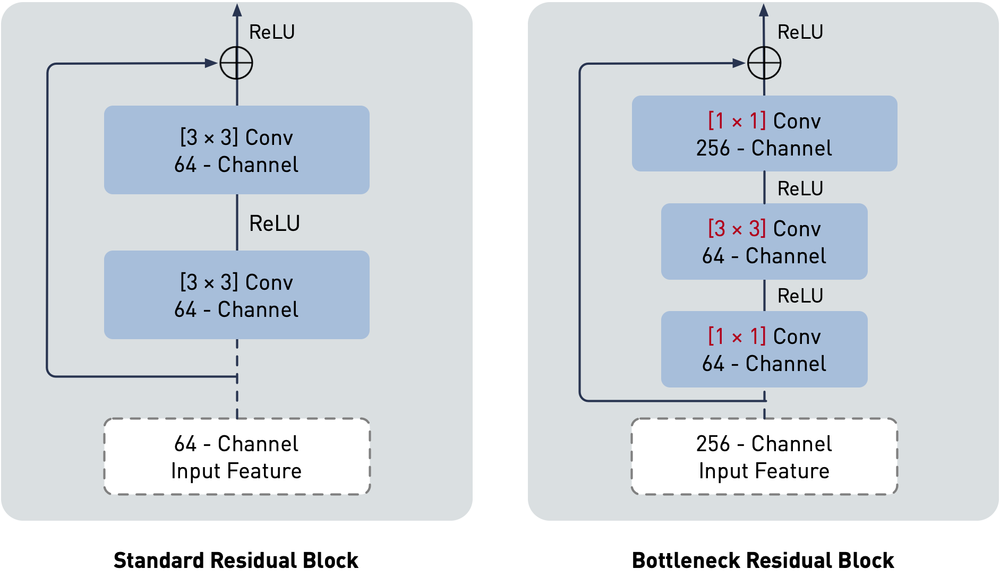
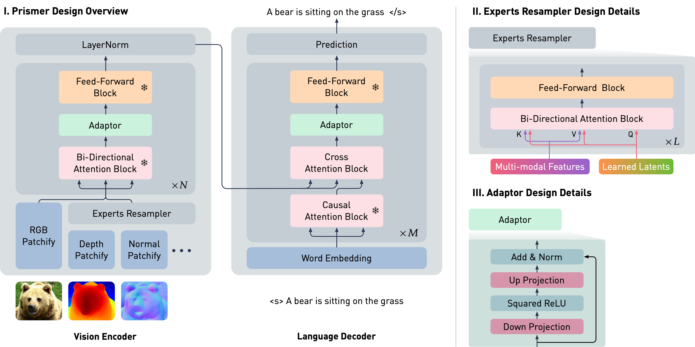

Clarity: A Minimalist Website Template for AI Research
by Shikun Liu
Welcome to Clarity — an open-source, minimalist website template designed for presenting AI research. Originally developed as the foundation for my personal website, Clarity offers a modular, clean design that is easy to customise for simple, project-based website creation. With Clarity, you can effectively showcase your work, ensuring your research stands out in a visually appealing and professional manner.
Clarity merges designs I've developed over the years for my prior AI research projects. By open-sourcing this template, I hope to benefit the AI and broader science community, by providing a clean and hackable website solution to better present and visualise research.
In today's AI research landscape, particularly with the rise of generative AI, it's increasingly beneficial for AI researchers to include interactive blog posts alongside research publications. Additional media materials and online demos, popularised by Gradio Demos, can make research more accessible and engaging to a broader audience. While large corporations can easily leverage teams of graphic designers and writers to polish their design and writing, Ph.D. students and independent AI researchers often lack the time and resources to do so. Clarity bridges this gap by offering an aesthetically pleasing, easy-to-navigate template for presenting AI research, simplifying the process of creating visually appealing technical blog posts.
The inspiration for Clarity also comes from many AI pioneers who have written clear and interactive blog posts that have significantly helped me study new machine learning research and insights. I'd like to extend my deepest gratitude to David Ha, Chris Olah (as well as his great contribution to Distill Pub and Transformer Circuits), Lilian Weng, Ferenc Huszár, and Andrej Karpathy. Their work has demonstrated the power of clear, accessible communication in AI research, and Clarity aims to continue this tradition, fostering a community where knowledge can be shared easily, freely and beautifully.
Within this template, I will also introduce some design guidelines and tips, complemented by visual examples from my own projects and those I admire. These guidelines will help you create a polished and professional presentation for your research, ensuring your findings are communicated as effectively as possible.
Containers and Visual Diagrams
Most AI projects incorporate visual diagrams to effectively communicate complex concepts. These diagrams often highlight new neural architecture designs and ML training pipelines, which are central to the project's contributions and research highlights. Clear and well-designed diagrams can significantly enhance the reader's understanding and engagement with the research. In Clarity, texts and visual diagrams are wrapped within a div container to maintain consistent design layouts.
Simple design modules, such as minor adjustments to a neural network block, can be directly embedded within the text in the same container, without additional captions. This approach helps readers comprehend the proposed concept in a seamless and integrated manner.
Here is an example I redesigned, illustrating the difference between standard and bottleneck residual blocks as proposed in Residual Networks.

For more complex visual diagrams, such as detailed neural architecture designs, it is recommended to use a separate container with a distinct background colour. This ensures that diagrams stand out and are easily distinguishable from the main text. Additionally, a new caption style is provided to help explain each design detail clearly.
We split an image into fixed-size patches, linearly embed each of them, add position embeddings, and feed the resulting sequence of vectors to a standard Transformer encoder. In order to perform classification, we use the standard approach of adding an extra learnable “classification token” (represented as a gray image patch) to the sequence.
Container Layouts
In Clarity, I have provided container widths with five options: main, large, extra-large, extra-extra-large, and max. These container layouts are designed to be responsive, automatically adjusting based on the screen size. The default width is main, which is used for this blog post. Be cautious when using the max option, as it has zero padding. Unless you are certain of the design, it's always recommended to leave some space for visual aesthetic purposes.
Here is an example I designed, illustrating the architectural details in Prismer using the extra-large container width.

Prismer has two main trainable components: the Experts Resampler that converts variable multi-task signals to a fixed number of outputs, and the Adaptor that enhances the model's expressivity for vision-language reasoning. To ensure that the model takes advantage of the rich domain-specific knowledge encoded in the pre-trained experts, the majority of network weights are frozen during training, as represented by the snowflake icon.
Container Colour
In both visual diagram examples above, I used the gray option for the container to apply a subtle tint of gray, helping to distinguish it from the main container. This option is ideal for visual diagrams with a transparent background. For visual diagrams with a white background, I included the gray-linear option. This feature adds a tint of gray only to the edges of the container while keeping the center white, maintaining a clean and cohesive appearance while still providing distinct visual separation.
Here is an example illustrated in VSL using the gray-linear container colour.
Inter-Class Shape Morphing
Intra-Class Shape Morphing
Note that, although these animations have a white background, they beautifully blend within this container.
Design Features
Here, I will briefly introduce each design feature included in the Clarity template.
Fundamentals
In Clarity, I have selected Poppins as the main sans-serif font and Charter as the main serif font. Both fonts are freely distributed and without license restrictions. (Note that these two fonts differ from the licensed fonts used on my personal website.) All font sizes and weights are carefully tuned to be visually balanced and responsive across various screen sizes.
Additionally, a simple grid system is provided in a separate CSS file. This can be easily applied by using a div with class columns-x (e.g., columns-6 for creating the above VSL example). This CSS file is designed to be separate from the main CSS file, allowing for project-specific customisations on top of the broadly used features included in the Clarity template.
Mathematics
Clarity supports $\LaTeX$ using the MathJax JavaScript engine. It can elegantly render simple inline mathematical equations such as $y=ax+b$, as well as more complex displayed equations such as used in Variational Auto-Encoder (VAEs):
$$
L_{VAE}(x^{(i)}, \theta, \phi) = -\mathbb{E}_{z}\left[\log p_{\theta} \left(x^{(i)}|z\right) \right] + \text{KL}\left(q_\phi(z|x^{(i)}) \|\, p_\theta(z) \right).
$$
I have chosen to use the Gyre-Pagella font for $\LaTeX$, which blends well with the current serif font, ensuring a consistent and visually appealing presentation of mathematical content.
Code
Clarity supports inline code blocks such as python train.py, as well as display code blocks. The display code blocks also support syntax highlighting using the highlight.js library. Here is an example using Classifier-Free Guidance with Rescale implementation proposed in this paper.
The display code block can also used for bibliographies, such as:
@article{lecun2015deep,
title={Deep learning},
author={LeCun, Yann and Bengio, Yoshua and Hinton, Geoffrey},
journal={nature},
year={2015},
publisher={Nature Publishing Group UK London}
}
Clarity uses my personal favourite monospaced font: Fira Code in code blocks. It also supports rendering beautifully coding literatures such as --> ++ != ## <<>>.
Tables
Clarity provides table blocks where every odd row is re-coloured with a gray tint. This helps to easily distinguish information within different rows, particularly with very wide tables. Here is an example using different model variants proposed in Llama-1.
Params
Dimension
$n$ heads
$n$ layers
Learning Rate
Batch Size
$n$ Tokens
6.7B
4096
32
32
$3e^{-4}$
4M
1T
13.0B
5120
40
40
$3e^{-4}$
4M
1T
32.5B
6656
52
60
$1.5e^{-4}$
4M
1T
65.2B
8192
64
80
$1.5e^{-4}$
4M
1T
Slide Display
The Slide Display feature is designed to allow readers to easily navigate and visualise multiple sequential or related visual elements, abstracted by a slide menu with dots. Here is an example using videos generated in StyleGAN-3.
The videos show interpolations between hand-picked latent points in several datasets. Observe again how the textural detail appears fixed in the StyleGAN-2 result, but transforms smoothly with the rest of the scene in the alias-free StyleGAN-3.
Auto Slideshow Display
Alternatively, the Auto Slideshow Display feature enables readers to enjoy a large array of visual elements through an automated, slideshow-like presentation. Users can also navigate through the slideshow manually with "Left" and "Right" buttons. Below is an example using videos generated in MarDini.
Selection Display
The Selection Display feature is designed to visualise multiple visual elements based on a user-selectable menu. This feature is commonly used for images visualised with conditional prompts, allowing users to explore different visual outputs by selecting various conditions or prompts from the menu. Here is an example using images generated in Google Parti.
Input Prompt:
A tornado made of
crashing into a skyscraper. Painting in the style of
.
Input Prompt:
A photo of an Athenian vase with a painting of
playing
in the style of Egyptian hieroglyphics.
Comparison Display
The Comparison Display feature allows users to visualise two images side by side with a controllable slider, making it easy to compare visual results against a baseline. This feature is particularly useful for showcasing improvements or differences between two images. Here is an example using upsampled images generated with GigaGAN.
Our GigaGAN framework can also be used to train an efficient, higher-quality upsampler. This can be applied to real images, or to the outputs of other text-to-image models like diffusion. GigaGAN can synthesize ultra high-res images at 4k resolution in 3.66 seconds.
Video Control / Buttons
Clarity supports video controls through a set of intuitive navigation buttons, making it easier for readers to pause, resume, and adjust playback speed as needed. This functionality is particularly useful for projects involving 3D vision and neural rendering. This feature was recently developed to support the EscherNet project, with an example demonstrating this control functionality below.
Zero-1-to-3-XL
EscherNet (1 View)
EscherNet (2 Views)
EscherNet (3 Views)
EscherNet (5 Views)
EscherNet (10 Views)
Speed: ×1.00
Other Design Tips
Colour
Colour is one of the most crucial visual elements in design and visualisation, and it is the main reason in making the Paris Olympics 2024 such visually memorable and refreshing. While I'm not a colour expert, and there're always more to learn, I generally prefer using low-contrast, pastel-like colours in my designs. I typically use variants of gray and dark blue to represent common features, and employ warmer colours such as orange and red to highlight important design elements, as illustrated in the neural architecture design example from this blog post.
For a more detailed understanding of colour design, I highly recommend the Material Design Colour Guidelines and this blog post — which provide valuable insights and are definitely worth exploring.
Icons
In Clarity, all icons are integrated using FontAwesome. As one of the largest and most comprehensive icon libraries available, FontAwesome offers a vast collection of clean and minimalist icons that perfectly align with Clarity's design style and a wide range of use cases. I have found FontAwesome particularly valuable for many of my design projects, and its integration ensures that Clarity maintains a modern and consistent visual style throughout.
Data Plots and Visualisation
I try to provide consistently high-quality plots useable for both $\LaTeX$ papers and websites using the TikZ library. However, as many researchers know, TiKz offers stunning vector graphics but is notoriously difficult to use, and $\LaTeX$'s syntax design can be quite a headache (which makes new layout tools like Typst quite intriguing).
To balance efficiency with quality, I typically use matplotlib and other Python tools to quickly prototype plots. I then use tikzplotlib to convert these plots into TiKz code. Finally, I refine the generated Tikz code for the final presentation. Although this process isn't always perfect, it has proven to be my most efficient solution, allowing me to create high-quality plots within a reasonable time (such as this example of raw TiKz code here).
Open-Source Contribution and Future Plans
The current version of Clarity already includes a range of design features suitable for many use cases. However, I plan to continue improving Clarity with new features and design elements as long as I am still working in AI research (and/or AGI is not solved :/). Since Clarity is open-source, I also welcome contributions from the community. Some example features that would be valuable additions include: 1. A content menu and hover citation system similar to those found in Distill blogs, and 2. Music and sound layouts as demonstrated in OpenAI Jukebox.
License
Following Nerfie, arguably one of the most popular website templates currently available, Clarity is also licensed under the Creative Commons Attribution-ShareAlike 4.0 International License. This allows you to freely modify and distribute the template in any way you like. Similarly, I kindly ask that you link back to this page in the footer to acknowledge my work and efforts. Enjoy!